材料 4個分
※粉量を変えると自動計算されます
生地
カスタードクリーム
りんごのフィリング
作り方
カスタードクリーム
STEP 1
鍋に卵黄、グラニュー糖、薄力粉を入れて混ぜる
卵黄、グラニュー糖、薄力粉を先にしっかり混ぜ合わせておくことで、加熱したときにダマになりにくくなります。粉っぽさがなくなるまで混ぜ合わせます。
卵黄、グラニュー糖、薄力粉を先にしっかり混ぜ合わせておくことで、加熱したときにダマになりにくくなります。粉っぽさがなくなるまで混ぜ合わせます。
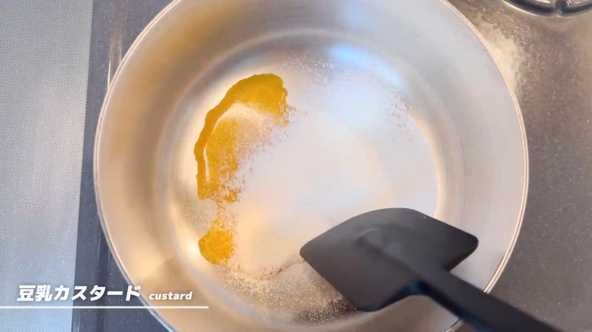
STEP 2
豆乳を加えて火にかけ、混ぜる
豆乳を加えて混ぜ合わせてから中火にかけます。鍋底から固まり始めないよう、絶えず混ぜながら加熱し、全体にとろみがついてなめらかになったら火を止めます。
豆乳を加えて混ぜ合わせてから中火にかけます。鍋底から固まり始めないよう、絶えず混ぜながら加熱し、全体にとろみがついてなめらかになったら火を止めます。
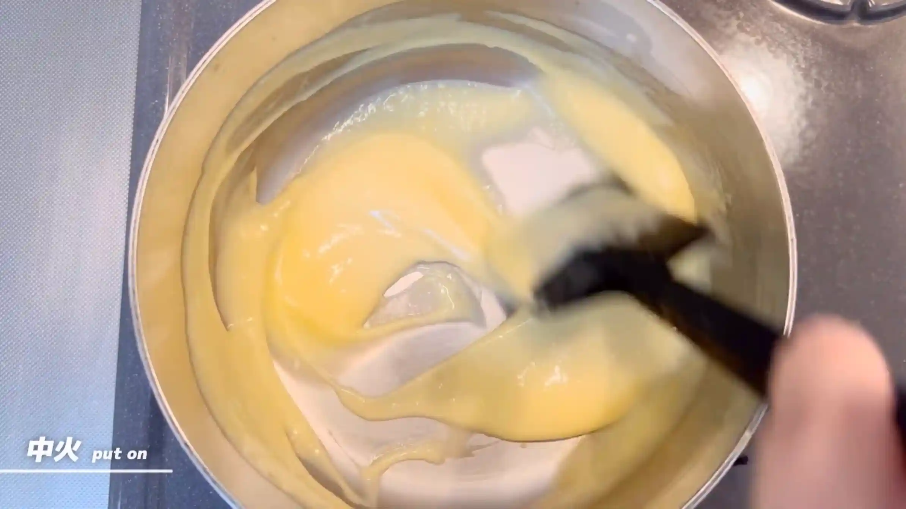
STEP 3
バターとバニラエッセンスを加え混ぜる
火を止めてからバターとバニラエッセンスを加え、バターが溶けて全体がなめらかになるまで混ぜ合わせます。余熱でバターを溶かしながら混ぜることで、カスタードにコクと風味を加えます。
火を止めてからバターとバニラエッセンスを加え、バターが溶けて全体がなめらかになるまで混ぜ合わせます。余熱でバターを溶かしながら混ぜることで、カスタードにコクと風味を加えます。
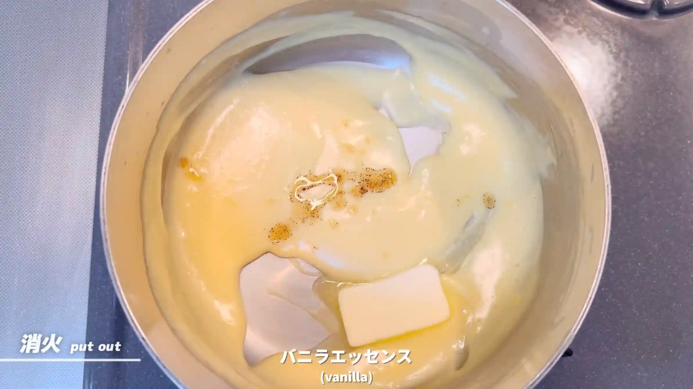
STEP 4
冷蔵する
カスタードクリームをバットなどに広げ、乾燥しないようにラップをして冷蔵します。クリームは冷やすと硬さが出るため、生地にのせる時は軽くほぐしてから使います。
カスタードクリームをバットなどに広げ、乾燥しないようにラップをして冷蔵します。クリームは冷やすと硬さが出るため、生地にのせる時は軽くほぐしてから使います。
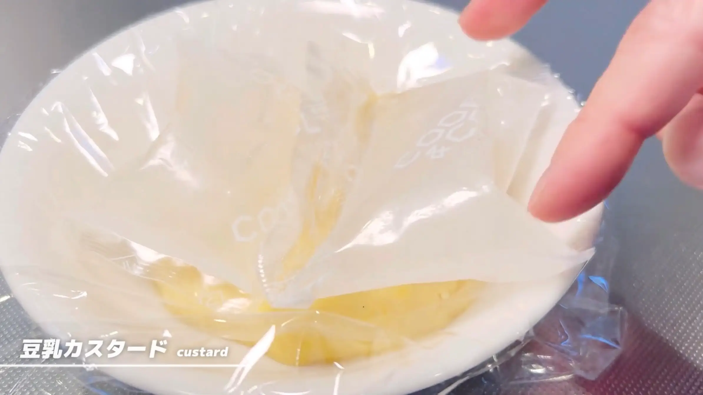
りんごのフィリング
STEP 1
りんごにグラニュー糖をかけ、レンジで加熱する
りんごを細かく刻み、グラニュー糖を加えて、レンジ600Wで2分ほど加熱します。レンジで加熱することで余分な水分を飛ばし、りんごの甘みを凝縮させながら、フィリングとして扱いやすい状態にします。加熱後はペーパーなどで水分を取り除き、冷ましてから生地にのせて使います。
りんごを細かく刻み、グラニュー糖を加えて、レンジ600Wで2分ほど加熱します。レンジで加熱することで余分な水分を飛ばし、りんごの甘みを凝縮させながら、フィリングとして扱いやすい状態にします。加熱後はペーパーなどで水分を取り除き、冷ましてから生地にのせて使います。
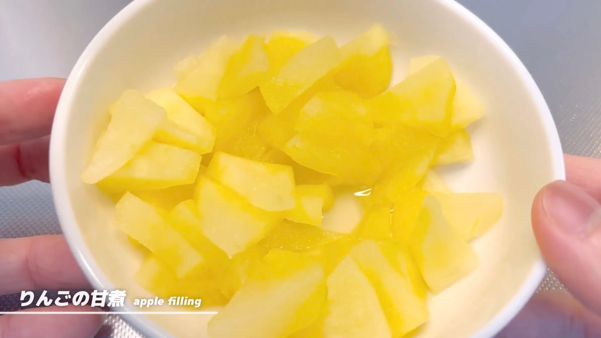
生地
STEP 1
ホームベーカリーで生地を作る
ホームベーカリーに材料をセットし「生地コース」で生地を作ります。コースが終わったら、次の作業に進みます。
ホームベーカリーに材料をセットし「生地コース」で生地を作ります。コースが終わったら、次の作業に進みます。
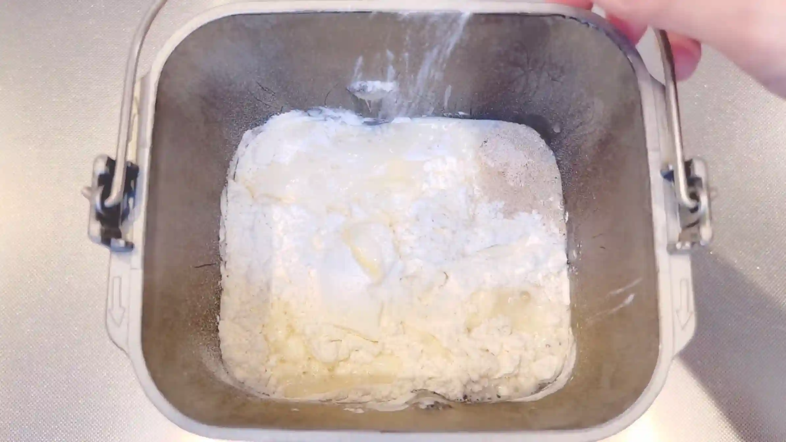
STEP 2
生地を取り出し、4分割する
生地を4等分し、それぞれ表面がなめらかになるように軽く丸めます。
生地を4等分し、それぞれ表面がなめらかになるように軽く丸めます。
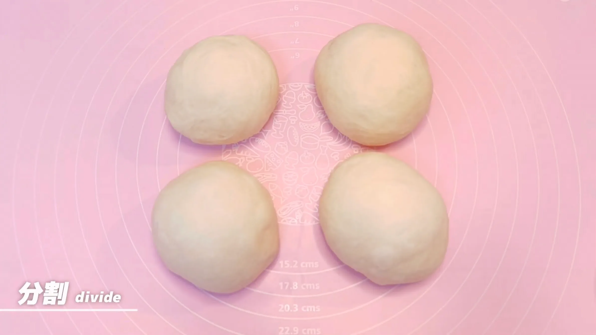
STEP 3
ラップをして、室温で10分おく
乾燥しないようにラップをして、生地を休ませます。こうすることで生地がゆるみ、次の工程で伸ばしやすくなります。
乾燥しないようにラップをして、生地を休ませます。こうすることで生地がゆるみ、次の工程で伸ばしやすくなります。
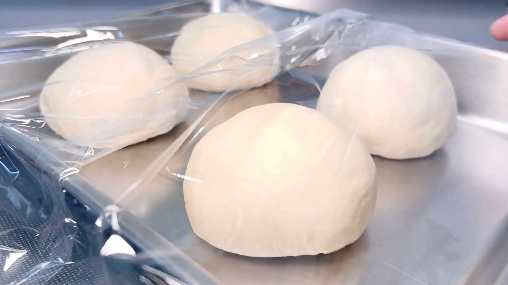
STEP 4
生地を20㎝の円形に伸ばし、フィリングを入れる
生地を20㎝ほどの円形に伸ばし、上1/3あたりにカスタードクリームとりんごのフィリングをのせます。フィリングを中央に寄せておくことで、この後に生地で包みやすくなります。
生地を20㎝ほどの円形に伸ばし、上1/3あたりにカスタードクリームとりんごのフィリングをのせます。フィリングを中央に寄せておくことで、この後に生地で包みやすくなります。
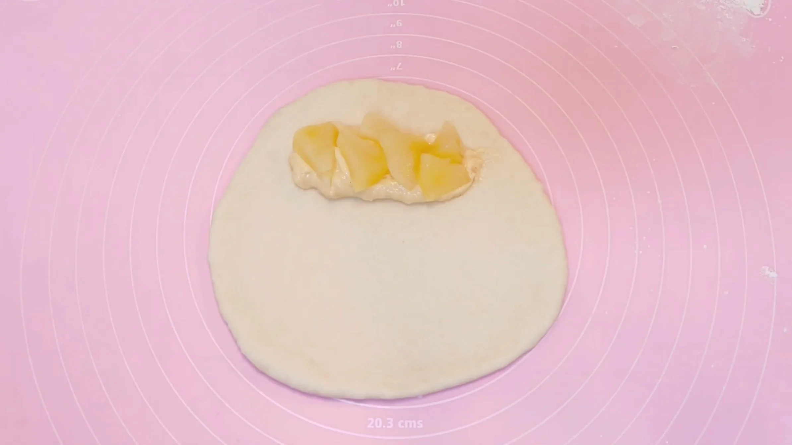
STEP 5
フィリングを包む
フィリングを包み込むように生地を折り、端をしっかり閉じます。とじ目が開いていると、次の切れ目を入れる工程や編み込みの際にフィリングが出てきやすいため、きちんと閉じておきます。
フィリングを包み込むように生地を折り、端をしっかり閉じます。とじ目が開いていると、次の切れ目を入れる工程や編み込みの際にフィリングが出てきやすいため、きちんと閉じておきます。
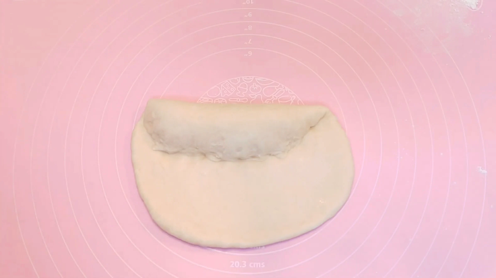
STEP 6
下半分に切れ目を入れる
フィリングを入れていない下半分に、12本ほど切れ目を入れます。切れ目をできるだけ均等に入れておくと、編み込んだときの模様が整いやすくなります。
フィリングを入れていない下半分に、12本ほど切れ目を入れます。切れ目をできるだけ均等に入れておくと、編み込んだときの模様が整いやすくなります。
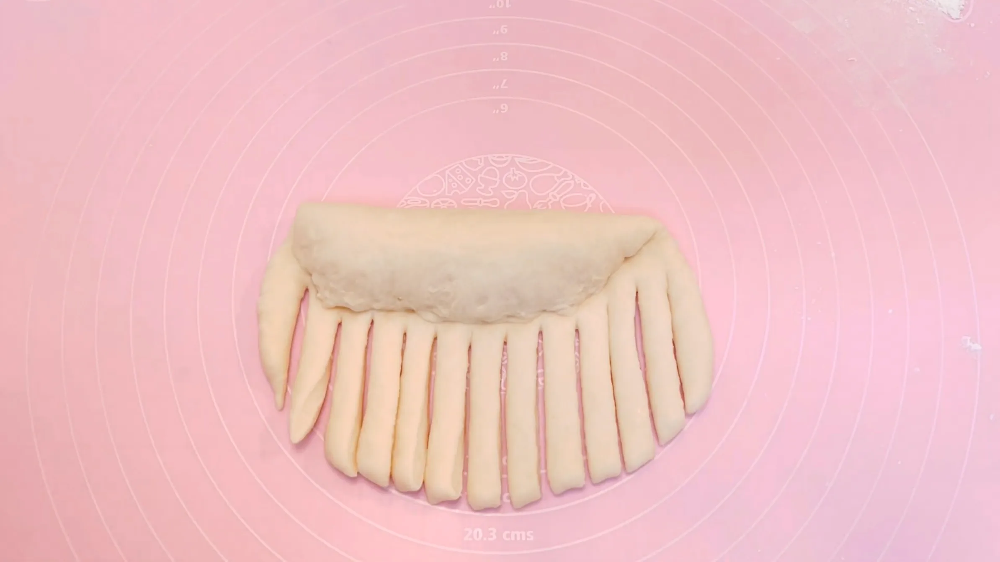
STEP 7
生地を編む（[動画 04:34]）
左右の生地を交互に動かし、フィリングを包み込むように編んでいきます。生地を強く引っ張ると形が崩れたりフィリングがはみ出したりするため、やさしく編むのがポイントです。
左右の生地を交互に動かし、フィリングを包み込むように編んでいきます。生地を強く引っ張ると形が崩れたりフィリングがはみ出したりするため、やさしく編むのがポイントです。
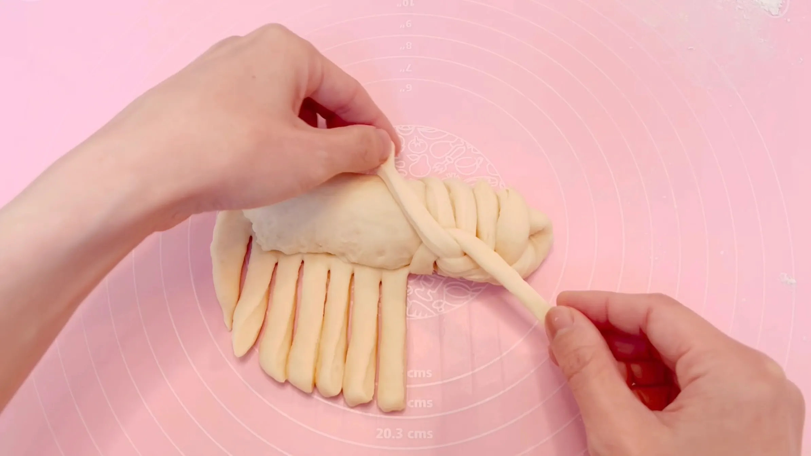
STEP 8
生地の端を軽く閉じる
編み終わった生地をドーナツ状につなぎ、端同士を軽く閉じます。このとき、編み目が斜め上を向くように丸めると、焼き上がったときに模様がきれいに見えます。
編み終わった生地をドーナツ状につなぎ、端同士を軽く閉じます。このとき、編み目が斜め上を向くように丸めると、焼き上がったときに模様がきれいに見えます。
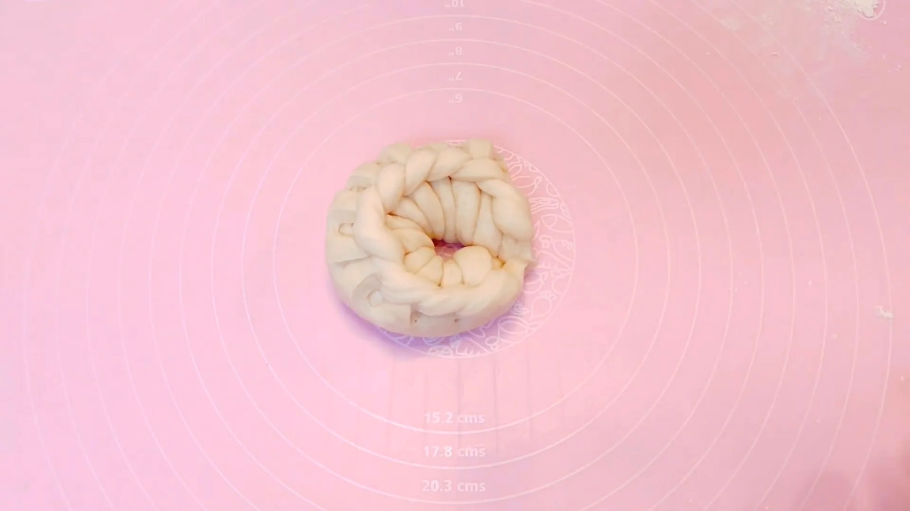
STEP 9
室温で40分おく
乾燥しないようにラップをして、成形した生地を二次発酵させます。発酵時間は室温によって変わるため、40分を目安に、生地がふっくらと膨らんだら次の工程へ進みます。
乾燥しないようにラップをして、成形した生地を二次発酵させます。発酵時間は室温によって変わるため、40分を目安に、生地がふっくらと膨らんだら次の工程へ進みます。
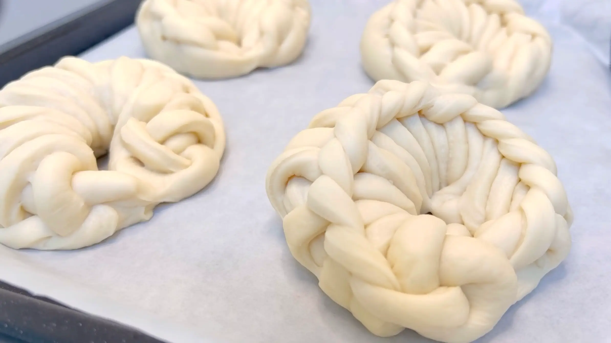
STEP 10
豆乳を塗り、オーブン190℃で25分焼く
焼成前に生地の表面へ豆乳を薄く塗ります。表面に焼き色がつきやすくなり、香ばしい焼き上がりになります。表面がきつね色になるまで焼き、焼き時間はご家庭のオーブンに合わせて調整してください。
焼成前に生地の表面へ豆乳を薄く塗ります。表面に焼き色がつきやすくなり、香ばしい焼き上がりになります。表面がきつね色になるまで焼き、焼き時間はご家庭のオーブンに合わせて調整してください。
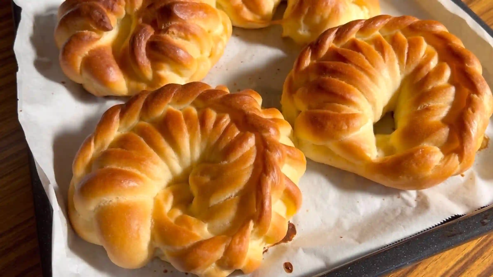
動画でチェック
おいしく作るためのワンポイントコラム
生地に10本から15本ほどの切れ目を入れて、交差させながら編んでいく。海外の動画で見つけたこの編み込み成形が、とっても可愛くて、『りんごカスタードパン』を作りました。
自家製のカスタードクリームと甘酸っぱいりんごを組み合わせた、まるでアップルパイのようなリッチなパンを仕上げるための3つのコツをまとめました。
① 生地のコツ
焼き上がったあとも編み込み模様がくっきりときれいに見えるよう、仕込みに豆乳と卵白を加えて少し硬めの生地に仕上げるのがポイントです。生地に適度なハリと硬さを持たせることで、オーブンの中で膨らんだときにも網目のエッジがだれずに残り、立体感のある華やかな見た目になります。
② 成形のコツ
生地を20cmほどの円形に伸ばしたら、生地の半分でフィリングを包み込み、もう半分に10本から15本ほどの切れ目を入れます。この紐状の生地を交差させる作業を繰り返すことで、綺麗な網目模様が生まれます。そして網目を真横より少し上に作るのが可愛く仕上げるコツ。上から見たときに少し模様がのぞいて見えると、焼き上がりがとてもおしゃれになります。
③ カスタードのコツ
中に詰めるカスタードクリームは、卵白を使わず卵黄だけで作ることで濃厚な味わいに仕上げます。さらに、牛乳の代わりに豆乳を使うことでコクがアップし、パン生地にも負けない、お菓子のように贅沢で満足感のあるクリームになります。
編み込みは少し難しいですが、こういった成形は本当に楽しいですね！焼き上がったときの愛おしさと美味しさは格別です。自分好みの可愛いパンに仕上がっていくわくわく感をぜひ体験してみてください。
自家製のカスタードクリームと甘酸っぱいりんごを組み合わせた、まるでアップルパイのようなリッチなパンを仕上げるための3つのコツをまとめました。
① 生地のコツ
焼き上がったあとも編み込み模様がくっきりときれいに見えるよう、仕込みに豆乳と卵白を加えて少し硬めの生地に仕上げるのがポイントです。生地に適度なハリと硬さを持たせることで、オーブンの中で膨らんだときにも網目のエッジがだれずに残り、立体感のある華やかな見た目になります。
② 成形のコツ
生地を20cmほどの円形に伸ばしたら、生地の半分でフィリングを包み込み、もう半分に10本から15本ほどの切れ目を入れます。この紐状の生地を交差させる作業を繰り返すことで、綺麗な網目模様が生まれます。そして網目を真横より少し上に作るのが可愛く仕上げるコツ。上から見たときに少し模様がのぞいて見えると、焼き上がりがとてもおしゃれになります。
③ カスタードのコツ
中に詰めるカスタードクリームは、卵白を使わず卵黄だけで作ることで濃厚な味わいに仕上げます。さらに、牛乳の代わりに豆乳を使うことでコクがアップし、パン生地にも負けない、お菓子のように贅沢で満足感のあるクリームになります。
編み込みは少し難しいですが、こういった成形は本当に楽しいですね！焼き上がったときの愛おしさと美味しさは格別です。自分好みの可愛いパンに仕上がっていくわくわく感をぜひ体験してみてください。


華やかな模様がとっても可愛い『りんごカスタードパン』のレシピです！自家製カスタードとレンジで簡単に作るりんごフィリングを包み込みました。コラムでは「生地のコツ」「成形のコツ」「カスタードのコツ」の3つのポイントをシンプルにご紹介します。